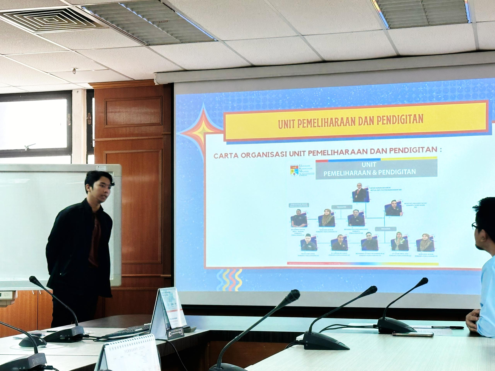

Key Responsibilities
Multimedia Unit
- Material Preservation: Managed the maintenance of multimedia assets, including replacing silica gels in storage racks to prevent environmental damage.
- Resource Indexing: Systematic indexing of CDs, DVDs, and institutional photo archives for easy retrieval.
- Mapping Data: Assisted in compiling and organizing geographic maps of Malaysian states and districts.
Preservation & Digitization Unit (UPPG)
- Digital Repository (DSpace): Edited and uploaded institutional materials (CD/DVD images) to the UKM online repository with accurate metadata.
- Thesis Management: Processed academic theses, ensuring correct formatting and metadata tagging for the digital library system.
- Quality Control: Verified digital assets for integrity before public archiving.
Experience Gallery



Snapshots from my daily tasks at the Multimedia and Digitization units.
Referees
NORBAIZURA MALEK
Head of Unit (Senior Librarian) (S10)
Supervisor — Tun Seri Lanang Library
Tun Seri Lanang Library (UKM) / Department Of Information Technology & Knowledge Infrastructure
MOHD ADNAN BAHAROM
Head of Unit (Senior Librarian) (S10)
Supervisor — Tun Seri Lanang Library
Tun Seri Lanang Library (UKM) / Department Of Information Technology & Knowledge Infrastructure
ROSNITA BINTI SAHRANI
Senior Lecturer
Faculty Supervisor — Universiti Teknologi MARA
Universiti Teknologi MARA / Faculty of Information Information Science Studies
Internship Certification
Download